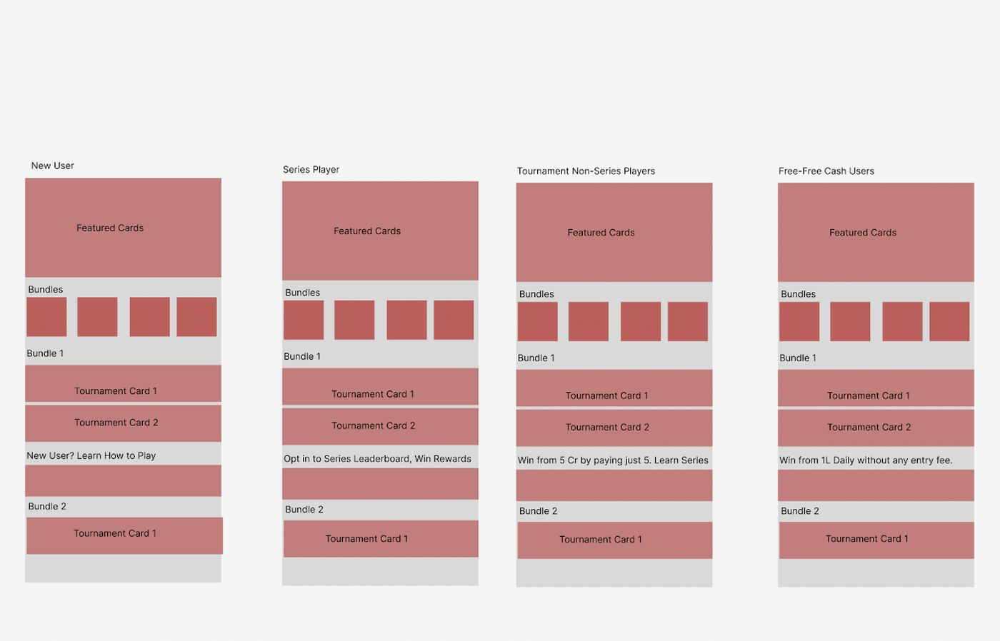
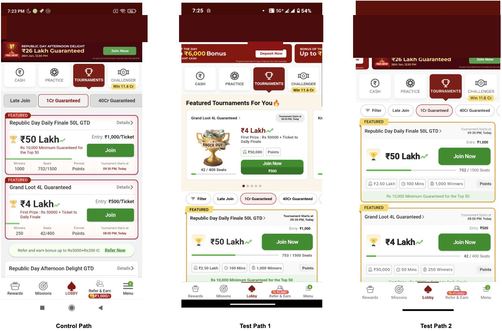
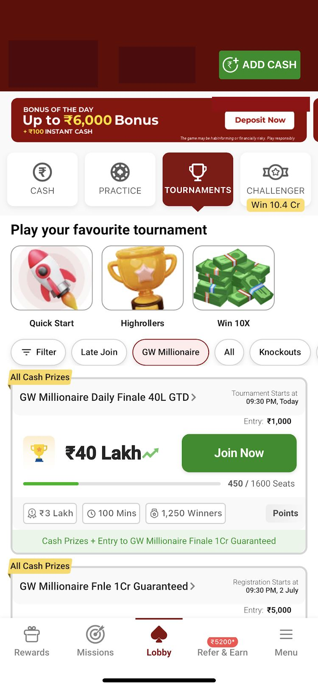

The problem
Every player saw the same tournament order: registered first, then highlighted, then open for registration by start time. The four groups using that list wanted different things. Power players had history and clear preferences. Casual players were unclear on cards, prize pools and jargon. New players did not understand tournaments at all. Old players were heavy ring-game players with no tournament affinity.
One order, four requirements. The measures were join rate, conversion and ARPU.

What I decided, and what I turned down
Cohort ranking, not per-player. Per-player was the more sophisticated option and would have degraded worst for players with no tournament history, which was the group most in need of help. Four segments were also legible to the people who had to configure and debug them.
Merchandising logic in a rules engine on the admin, not in the client. Tournament inventory turns over constantly and campaign calendars move faster than release cycles. The alternative shipped faster once and slower every time after.
Featured placements stay manual. A guaranteed-prize series launch is a commercial commitment with a date attached, not something a rule infers.
Three test paths, not two. Full build, card redesign alone, and control. The second path existed so the featured card and rules engine could be measured separately, which meant the experiment could show half my own build was not carrying the result.

What happened
Both test paths lifted ARPU by about seven percent and were indistinguishable. The bundles, rules engine and segment configuration added nothing that the card redesign had not already delivered.
The full build did change behaviour: tab and filter clicks fell over five points against control, against one point for the card-only path. Players stopped browsing. But average tournaments played fell in both paths while wager per tournament rose, and ring-game rake fell in the full build while rising in the card-only one.
The smallest change was among the largest: the join flow conditional, showing cash when the player holds no valid ticket, lifted ticket purchase success seventeen points.
Two results went the wrong way. Withdraw success fell materially in both paths while withdraw attempts rose, and lobby clicks fell slightly in both.
The bundles, tested separately

Win 10X drew the most clicks and converted roughly one registration in twenty. Quick Start drew fewer and converted more than half. Highrollers drew fewest, and of those who clicked join inside it about one in ten completed — an entry fee problem, not a discovery one.
ARPU rose about two and a half percent, but only around one percent of registrations came through the bundle tab, so the mechanism does not account for the headline. Cash join clicks rose and free join clicks fell by almost the same amount, because no free tournaments had been mapped into any bundle. Nobody decided to shift the mix toward paid play; it followed from the mapping.
What I would change
Ship the card redesign first. It would have set the baseline before engineering committed to a rules engine, and the bundle decision would have been taken knowing what it had to beat.
Measure what a player stopped doing. Every success metric pointed at tournaments. Ring rake sat only on the guardrail list, and it was the metric that revealed the substitution.
Rank on what a player can enter, not only what they prefer. Highrollers failed at the join step.
Review what gets mapped. Tooling that lets operations change merchandising without a release also lets them change it without a discussion.